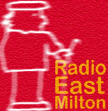

|  |
|
Radio East Milton is the Senior Dads spiffy new all music and no talk Realaudio Internet Radio Station!!!! Listen to zillions of pop tunes courtesy of Imagine Radio (The techhy bits!!) and the Senior Dads (The playlists!!!!)
What you need to listen to Radio East Milton:
NEWS!!!
Our first plug!!!!
The very wonderful Newstrolls site has given us a plug!!!! Pasty Drone said: "Hey Old Fart! Anyone who gives a 5 weight in the playlist to BowWowWow AND Public Enemy is cool by me!"
Listen To Radio East Milton!!!!
Wotz Tha Current Playlist?!?!?